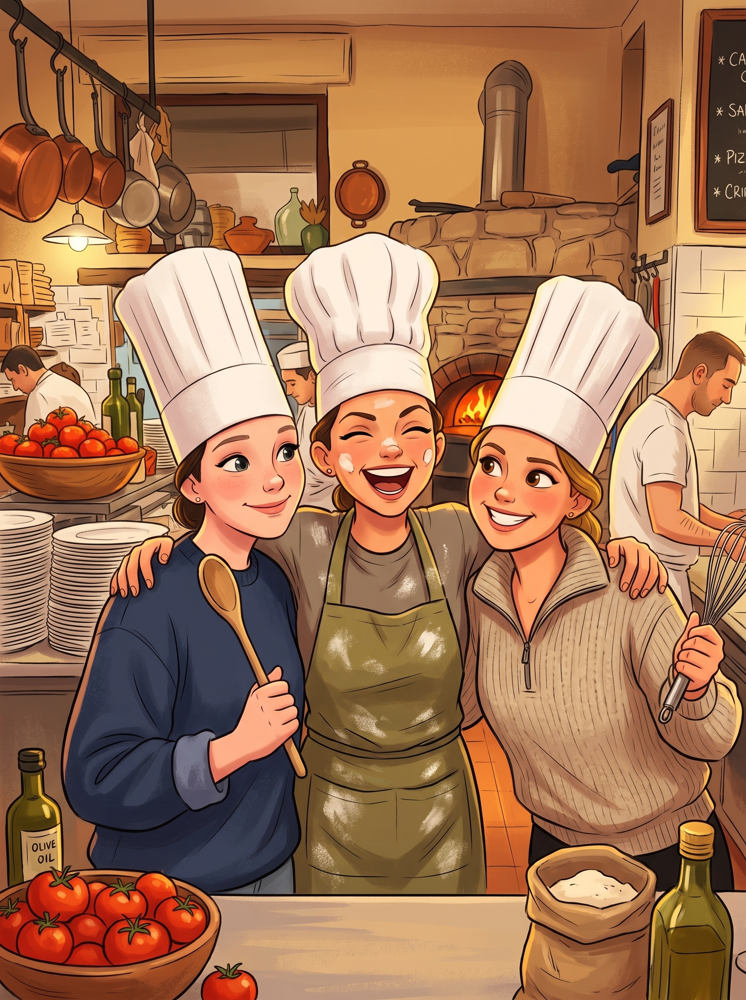

Authentic Italian dining brought to you by sisters and founders Melania Gonzalez, Gabrielle Fortner, and Amanda Ballard.
Reserve a Table Browse MenuAt Sorelle Ristorante Italiano, we blend traditional family recipes with modern convenience. Whether you are visiting us for an evening meal or planning ahead from home, our online platform makes dining with us effortless.
Skip the phone call. View real-time table availability as a visitor, or log in as a member to book and manage your reservation directly.
View Available TimesExplore our authentic Italian dishes with photos and easily search for your favorite pasta, antipasti, or desserts before you arrive.
Explore the MenuLog in to your member account to track your spending, check your loyalty points remotely, and unlock milestones toward a free meal.
Check Your Points